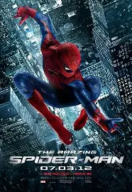
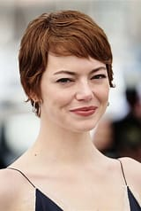
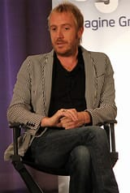
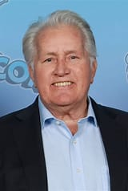
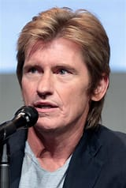

O Espetacular Homem-Aranha
Andrew Garfield é um ator britânico-americano conhecido por seu talento e versatilidade. Ele ganhou reconhecimento mundial ao interpretar Peter Parker no filme O Espetacular Homem-Aranha. Além disso, estrelou produções aclamadas como Até o Último Homem e Tic, Tic... Boom!.
Garfield recebeu diversas indicações a prêmios, sendo amplamente elogiado por sua entrega emocional e profundidade em seus papéis.
O Espetacular Homem-Aranha é um filme de super-herói lançado em 2012, dirigido por Marc Webb. A trama reinicia a franquia do Homem-Aranha, mostrando uma nova origem para Peter Parker, um jovem que adquire poderes após ser picado por uma aranha geneticamente modificada.
O filme mistura ação, humor e drama, explorando o lado humano do herói e seu relacionamento com Gwen Stacy, interpretada por Emma Stone.

Andrew Garfield
Peter Parker / Homem-Aranha

Emma Stone
Gwen Stacy

Rhys Ifans
Dr. Curt Connors / Lagarto

Martin Sheen
Ben Parker
Sally Field
May Parker

Denis Leary
Capitão Stacy